My son just got silly putty in his hair. I will be 5-10 minutes late.
This was the text I got as I headed to the Blakely Island Marina and General Store to meet the proprietor, Aja Eyre. Running a small marina three months of the year on a small island in Washington’s San Juan Islands may sound like an idyllic job, but Aja Eyre, her husband Jonah, their five children, and friends know it’s a complex and all-encompassing undertaking.
Eyre deftly trimmed the silly putty out of son Ezra’s hair and made it to our meeting virtually on time. With a Harvard degree and an unconventional life that has led her and her family around the world from Las Vegas to Spain and New Zealand to Maui, she feels that Blakely Island is the closest thing to home. Eyre’s grandparents, looking for a fly-in second home, bought property on Blakely in the early 1970’s, and she’s spent every summer but two on the island. She first worked in the marina at age 13, doing odd jobs and stocking and eventually worked her way up to assistant manager. Now, juggling a family of five with running the marina, she faces a variety of revenue streams and multiple management challenges in exchange for family, water, fir trees, a great climate, and distance from big cities. It’s not for the faint of heart.
The Eyre Family
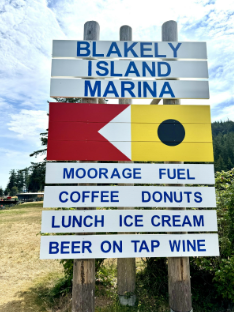 |
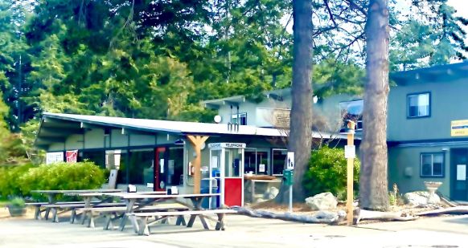 |
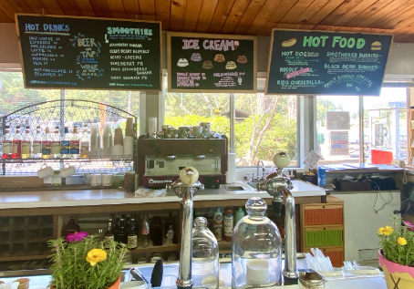
The store stocks basics like crackers, milk, and peanut butter.
There is also a limited selection of books about the region, branded clothing, paintings, and crafts created by island residents, and limited fresh produce. A soda fountain area offers healthy lunch specials. For the 100-some island property owners, the marina is critical for gasoline, a morning latte, an extra bottle of wine, or some Maui Waui sherbet (cannabis free!). For fishers and cruising boats, it’s a stop for diesel fuel, ice, and basic foods. For workmen, it might be a burrito lunch and a beer at the end of the day. For visitors, perhaps a t-shirt or tote bag. There is even a resident physical therapist available by appointment. The outdoor telephone booth, however, is now décor only.
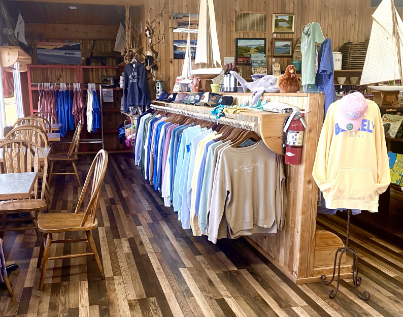
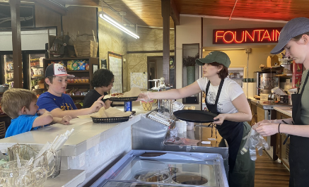
After college, Eyre spent summers on the island generally not stopping in the marina. But her husband proposed to her on Blakely and knew it was a special place for her. In November 2021, the previous marina operator left, and the community sent out the word that a replacement was needed. The Eyre family lived on Maui but were flexible thanks to Jonah’s high-end construction business and Eyre’s consulting practice. “We felt that it was time for us to contribute to Blakely. I said to my husband, “We should either join the board or operate the marina.” Her husband dug in and said no, but she felt it would be great for her children. “I promised my husband we would make enough money to buy a new boat for the store.” He gave in. They bought the boat this year.
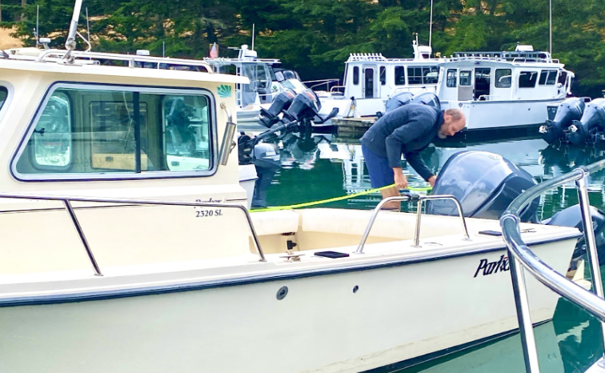
Jonah Eyre washes out the boat after a grocery run
“It’s a labor of love. We consider a dual purpose for us. The number one purpose is to teach our kids and other kids in our community to help them learn the principals of good business and the values of hard work, efficiency, kindness, and working well with others. Our second purpose was to provide a gathering place for the community,” said Eyre. One successful strategy is to hold monthly cook-out dinners with live local musicians in the adjacent pavilion, always a special treat for residents and visitors alike.
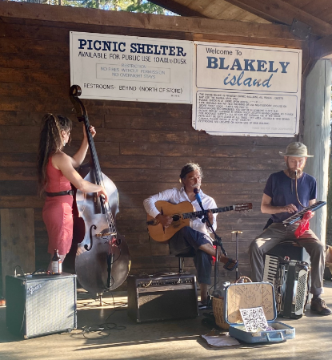 |
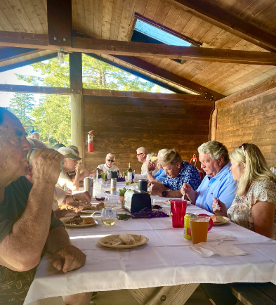 |
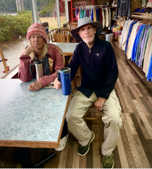
An added benefit for Eyre is perhaps surprisingly to serve tourists: “You are constantly dealing with people who are so happy to be visiting!” Kat and David Mooney stopped on Blakely for the first time. They came here for ice, gas, some food, and to hang out a while with their two dogs. “This is a most special place,” said Kat. Based in Colorado, they are retired and are cruising the San Juans.
They said they’d be back.
Boat traffic is a daily fact of life at the marina, and fuel sales contribute to their revenue. It might be a cruiser like the Mooneys or large sailboat, a coast guard patrol or crabbers. Almost daily a barge will bring over cars or workmen’s trucks. Two water taxis, the Island Express and the Paraclete (owned by Eyre’s uncle) will bring walk-on traffic from the mainland or other islands, usually twice a day depending on demand. The marina operator is responsible for scheduling the overnight moorings in the slips behind the general store. Day trippers can briefly tie up at the dock where diesel and gas are available.
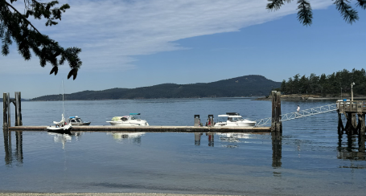
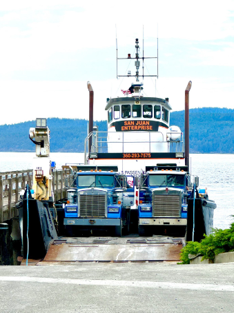 |
The Blakely Island Maintenance Commission (the homeowners association) leases the retail store to an independent operator to run the day-to-day business. “There had been seven different operators since I worked here,” said Eyre. “It is an absolute hodgepodge of remodels. That has been one of our biggest challenges. The kitchen is not set up as a commercial kitchen; it’s small and really hard to work in there…The bathroom opened into the kitchen. We closed off that door. The health department has been helping us. We were told we are the cleanest kitchen in San Juan County.”
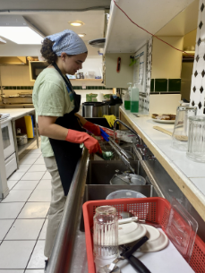
“We’re slowly replacing equipment. We just got a new ice cream dipping cabinet; the old one was from the 1970s,” said Eyre.” Ice cream is the most popular order at the counter.” In fact, some people call Blakely the Ice Cream Island. There’s only one other place in the San Juans where you can tie up your boat and walk to buy ice cream (Friday Harbor on San Juan Island).
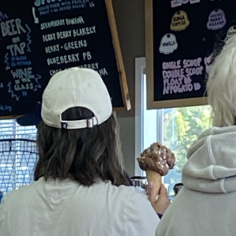 |
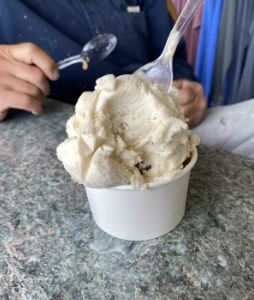 |
Like everything at the marina, ice cream has to be brought in from the mainland on a weekly shopping run. Only the US Post Office, FedEx and UPS deliver directly to Blakely. Jonah estimates that every product is handled six to eight times before it’s ready for purchase. The marina’s premium ice cream, Cascade Glacier comes from Oregon. On its weekly trip to Blakely, Aja and staff push hundreds of pounds of coolers filled with ice and ice cream up the ramp from the boat. They had picked it up on another island where it’s delivered. The whole thing takes about 2 hours. “It’s sweating bullets because you’re afraid of losing your ice cream.”
Island home-owner Steve Doughty favors Rocky Road
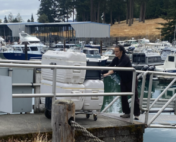
Large freezers in the back of the marina house gallons of ice cream in such delicious flavors as Death by Chocolate, Rocky Road, and Caramel Caribou. The Caramel Caribou, for reasons unknown to the Eyres, costs twice as much as the other flavors. They don’t charge a premium but when the supply runs low, they hold it back for residents.
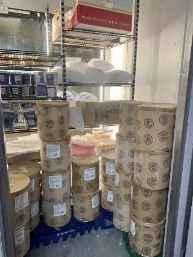
Staffing is one of the biggest challenges. “On average we have three or four people on duty. We have to have at least one over 21. These are all people we have to bring over.” Maren Mangisi is a cousin of a cousin of Jonah’s spending her third summer at the marina. “I like a close community, and I don’t like to feel like a cog lost in a corporation…the people of the island – it’s a great community. We’ve had a huge boost in the community of boaters this year…we’ve got some new signage out and [news of] the operator change has spread.” “All the restaurants in the area have the same issue,” said Eyre. “We’re lucky to have children and college students with the summers off who come back.”
Has the streaming series “The Bear” had any impact? “There’s definitely that frantic energy that’s part of The Bear. I laughingly forbid anyone to watch The Bear. We’re in no rush here; we’re not competing with other restaurants. They don’t have anywhere else to go,” she smiles.
With her flexible consulting business, the rest of the year Eyre is able to do a lot of the paperwork outside of the three months the marina store is open. Her oldest daughter Ana (now married to Josh) is the manager and handles much of the detail work. The rest of the year she and her husband run an online vintage apparel business. Among other tasks like keeping the boat running, husband Jonah can fix anything and creates all the recipes. Being very health conscience, he has upgraded the food offerings and ensures that virtually everything is made from scratch.
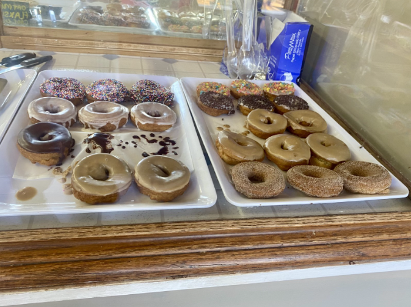
The donuts, made fresh daily, are very popular but don’t taste like ordinary donuts because they have much less sugar and are made with all sustainable ingredients; it took Jonah seven months to perfect the recipe. “He’s overqualified for the things we’re doing, so we save him for the big stuff,” says Eyre. (He’s currently also renovating their house on the island.) Donut fans don’t usually care about who developed the recipe, they, like everyone who uses the marina, just like the results.
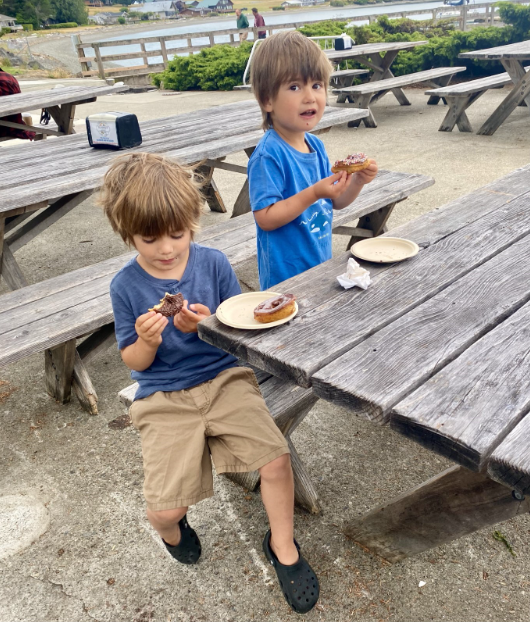
The Eyre family is succeeding in their goals of creating a meeting place and sense of community. A weekly emailed newsletter now highlights menus and events. Their children and others on the island are learning the basics of running a business and developing good customer service. Best of all, property owners and visitors can access basic necessities as well as some high caloric treats to sustain the rigorous island lifestyle.